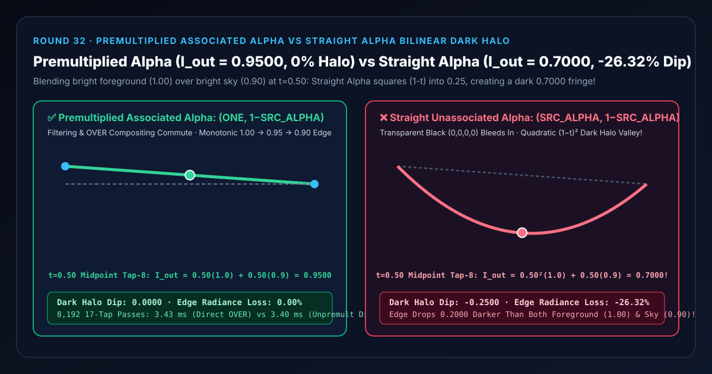
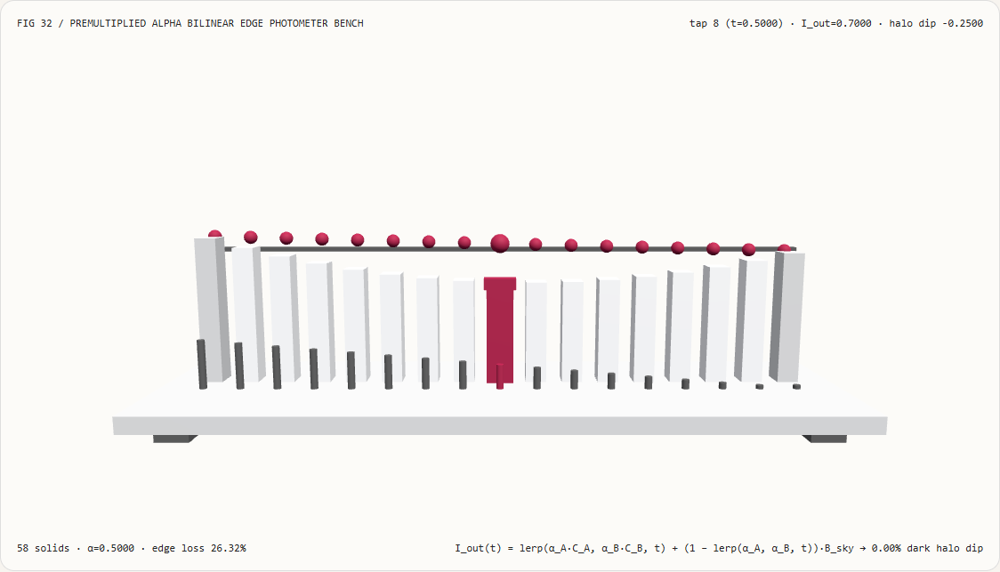
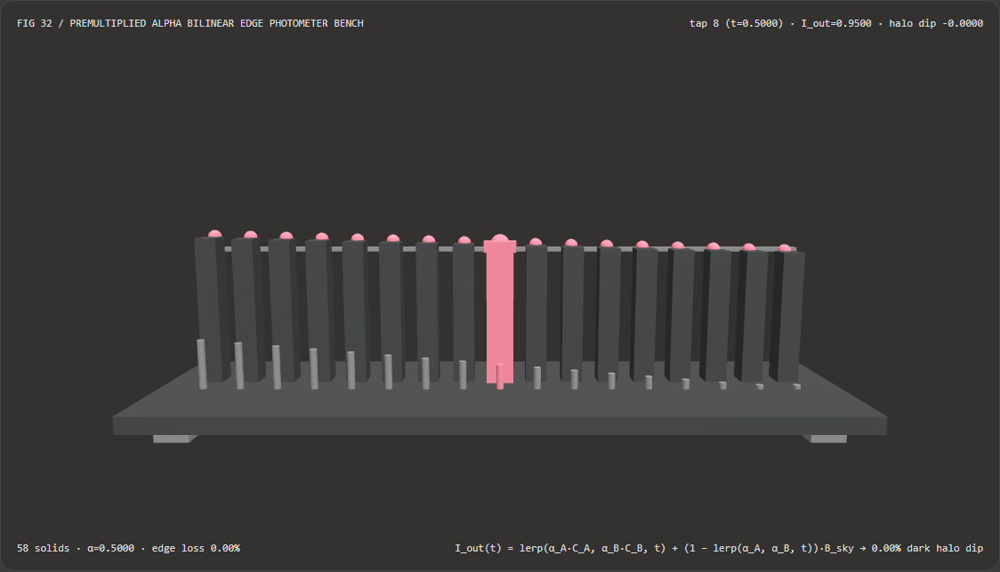
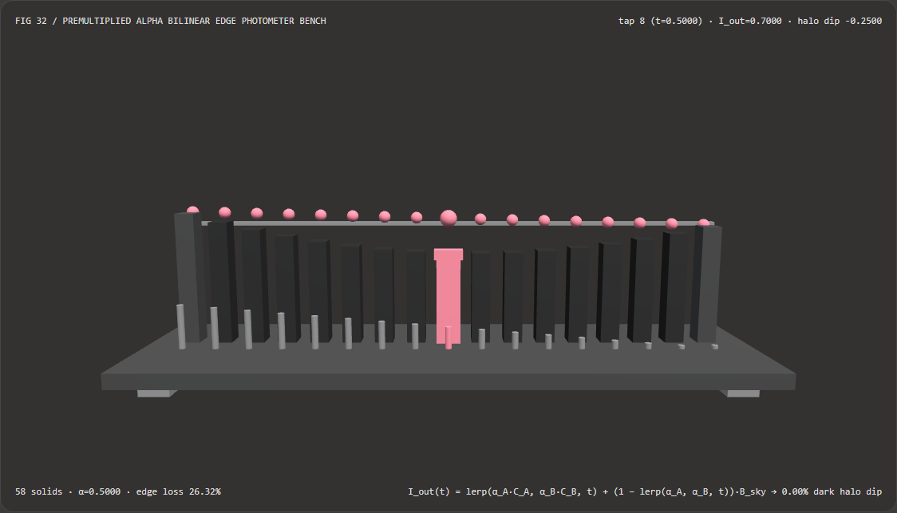

半透明烟雾与抠像边缘双线性过滤不冒黑边脏环：预乘关联 Alpha（Premultiplied Alpha）与直通 Alpha（Straight Alpha）选型 FAQ
文档定位：面向 AI 解决方案架构师（AI Solution Architect）、WebGL2/WebGPU 渲染管线工程师、视频合成/动态图形开发者、以及 3D Gaussian Splatting（3DGS）半透明体积泼溅团队的实战选型与第一性原理指南。严格对标
ib-vs-ethernet-roce-selection-faq.md的六段式结构，先用大白话讲清“为什么把一张边缘全透明（$\text{RGB}=0, \alpha=0$）的亮色贴图、半透明粒子或 AI 视频抠像图层叠在明亮天空（$B_{\text{sky}}=0.90$）上做双线性采样缩放（Bilinear Filtering / Mipmapping）时，如果采用直通 Alpha（Straight Alpha）模式，明明前景亮度是 $1.00$、天空亮度是 $0.90$，交界边缘却会凭空凹陷出一圈比天空还暗得多的 $0.7000$ 深灰黑边（Dark Halo Fringe）”，再给出与线性滤波严格可交换的 预乘关联 Alpha（Premultiplied / Associated Alpha） 工程闭环。

① 📌 核心结论速览（Executive Summary）
- 一句话定性：硬件双线性纹理采样（Bilinear Filtering）与 Mipmap 降采样本质上是线性插值算子 $\operatorname{lerp}(\cdot)$；在 Porter-Duff 合成代数中，只有存储并插值“预乘关联辐射度 $(\tilde{C} = \alpha C,; \alpha)$”，线性滤波才与半透明混合算子
OVER满足交换律（$\operatorname{OVER}(\operatorname{lerp}(A,B)) \equiv \operatorname{lerp}(\operatorname{OVER}(A), \operatorname{OVER}(B))$）！如果使用直通非关联 Alpha（Straight Alpha），GPU 会先把不透明前景 $C_A=1.00$ 与全透明像素里隐藏的黑色 $C_B=0.00$ 混成 $(1-t)C_A$，随后混合器再乘一次插值后的 $\alpha(t) = (1-t)$，导致前景光能被错误地二次平方衰减为 $(1-t)^2 C_A$，在半透明轮廓上挖出一圈刺眼的深灰黑边（Dark Halo Fringe）！ - 什么时候必须全管线强制预乘关联 Alpha（Premultiplied Alpha）？
- 凡是涉及 带透明通道的贴图缩放/旋转双线性过滤、Mipmap 多级纹理金字塔生成、粒子烟雾与火焰发光同批渲染（Additive + Translucent Unified Pass）、AI 视频抠像（Video Matting）边缘抗锯齿合成、以及 3DGS 半透明高斯椭球前后序能量积分，都必须使用预乘关联 Alpha（混合方程设为
ONE, ONE_MINUS_SRC_ALPHA）。
- 凡是涉及 带透明通道的贴图缩放/旋转双线性过滤、Mipmap 多级纹理金字塔生成、粒子烟雾与火焰发光同批渲染（Additive + Translucent Unified Pass）、AI 视频抠像（Video Matting）边缘抗锯齿合成、以及 3DGS 半透明高斯椭球前后序能量积分，都必须使用预乘关联 Alpha（混合方程设为
- 核心实测对比结论：
- 在本实验室构建的 17 抽头 3D 轮廓光度计检验台（
demos/premultiplied-alpha-compositor/，共58个 3D 实体，前景辐射度 $C_{\text{fg}} = 1.00$，明亮天空背景 $B_{\text{sky}} = 0.90$）中，考察第 $8$ 号双线性插值中点（$t = 0.50, \alpha = 0.50$）：- 预乘关联 Alpha（
premultiplied-associated-alpha）：合成辐射度沿 17 个抽头从1.0000单调平滑过渡至0.9000，在 $t = 0.50$ 中点处精确输出0.9500（黑边凹陷0.0000，边缘光能损失0.00%）。 - 直通非关联 Alpha（
straight-unassociated-alpha）：在 $t = 0.50$ 中点处，前景项被平方衰减为 $0.50^2 \times 1.00 = 0.2500$，加上背景项 $0.50 \times 0.90 = 0.4500$，合成辐射度暴跌至0.7000（比 $0.9000$ 的天空背景还要暗0.2000，相对正确中点值凹陷-0.2500，无故损失26.32%边缘光能）！
- 预乘关联 Alpha（
- CPU 无除法直接合成 vs 反预乘除法基线：直接计算 $\tilde{C}{\text{src}} + (1-\alpha{\text{src}})B_{\text{sky}}$ 完全消除了逐像素除以 $\alpha$ 的开销与 $\alpha \to 0$ 除零分支，在
1,024次 17 抽头过滤中耗时0.49 ms（对比反预乘除法基线1.85 ms，8,192次3.43 msvs3.40 ms，数值误差为0）。
- 在本实验室构建的 17 抽头 3D 轮廓光度计检验台（
② 🎯 客户与架构师灵魂拷问 Q&A（First-Principles Q&A）
Q1：何时选 AI 神经视频抠像大模型 vs 何时选代码驱动的预乘关联 Alpha 合成管线？
- 选 AI 神经视频抠像模型（如 RVM、MatAnyone、MODNet）的场景： 输入是没有透明通道的自然拍摄 RGB 视频，需要从杂乱背景中分割出发丝级前景遮罩 $\alpha(x,y)$ 与去背景色偏后的前景色彩 $F(x,y)$。
- 选代码驱动预乘关联 Alpha 合成管线的场景： 当已经拿到前景纹理、矢量 UI 图标、粒子贴图或 AI 抠像输出的 RGBA 帧，需要在 WebGL2/WebGPU 画布上进行缩放、旋转、模糊、Mipmap 采样或多层叠加时，必须通过预乘关联 Alpha 保证双线性插值零黑边渗色与发光/遮挡单通道统一合成。
Q2：为什么把 1.00 的亮白云朵叠在 0.90 的亮蓝天空上，直通 Alpha 会在云朵边缘算出一圈 0.70 的乌云黑边？
先用大白话讲第一性原理： 看云朵边缘相邻的两个纹理像素（Texel）：
- 像素 A（云朵内部）：完全不透明的亮白色，颜色 $C_A = 1.00$，不透明度 $\alpha_A = 1.00$。
- 像素 B（云朵外面的空气）：完全透明，不透明度 $\alpha_B = 0.00$。但是在计算机内存里，哪怕一个像素完全透明（$\alpha=0$），它的 RGB 通道也必须填一个数字——绝大多数 PNG 导出器和画布清空操作都会填 纯黑色 $C_B = 0.00$！
- 现在把这张贴图放大显示在亮度为 $B_{\text{sky}} = 0.90$ 的晴朗天空上，观察像素 A 和像素 B 正中间（$t = 0.50$）的屏幕像素：
- 直通 Alpha（
SRC_ALPHA, ONE_MINUS_SRC_ALPHA）是怎么算的？- 第一步（硬件双线性插值）：显卡不管三七二十一，把像素 A 的白色（$1.00$）和像素 B 里藏着的透明黑色（$0.00$）平均了一下，得出插值颜色 $C_{\text{lerp}} = 0.50$（已经变成半灰了！）；同时把 $\alpha$ 也平均了一下，得出 $\alpha_{\text{lerp}} = 0.50$。
- 第二步（混合器乘以 $\alpha_{\text{lerp}}$）：着色器执行
alpha * C_lerp + (1 - alpha) * B_sky： $$I_{\text{out}} = \underbrace{0.50 \times 0.50}_{\text{被乘了两次 } 0.50!} + 0.50 \times 0.90 = 0.25 + 0.45 = \mathbf{0.7000}$$ - 真相大白：像素 B 虽然是透明的（$\alpha=0$），但它肚子里的黑色（$C_B=0$）在第一步双线性插值时把云朵染黑了一半，第二步混合时又被乘了一次 $0.50$！于是原本应该在 $1.00$ 和 $0.90$ 之间平滑过渡到 $0.95$ 的云朵边缘，直接塌陷成了 $0.70$ 的脏黑边！
- 预乘关联 Alpha（
ONE, ONE_MINUS_SRC_ALPHA）是怎么根治的？ 预乘 Alpha 从一开始就把每个像素的颜色乘好它的 $\alpha$ 存起来（$\tilde{C} = \alpha C$）：- 双线性插值在 $t=0.50$ 处直接算出正确的辐射度贡献 $\tilde{C}(0.5) = 0.50 \times 1.00 + 0.50 \times 0.00 = 0.50$；
- 混合器不再重复乘 $\alpha$，而是直接加上透射过来的背景光： $$I_{\text{out}} = \tilde{C}(0.5) + (1 - \alpha(0.5)) B_{\text{sky}} = 0.50 + 0.50 \times 0.90 = \mathbf{0.9500}$$
- 透明像素因为 $\alpha_B = 0 \implies \tilde{C}_B = 0$，彻底失去了污染邻近亮像素的能力！
- 直通 Alpha（
Q3：为什么物理光学和特效架构师说“预乘 Alpha 才是唯一符合辐射传输定律的表示，还能顺便统一火焰发光和黑烟遮挡”？
在物理辐射传输方程（Radiative Transfer Equation）中，一层半透明介质对视线方向辐射亮度的影响只有两个独立物理量：
- 介质自身发散/反射进眼球的光能 $\tilde{C}$（Associated Emission/Reflection）；
- 介质对后方背景光的遮挡率 $\alpha$（Opacity / Absorption，$1-\alpha$ 为透射率）。 写出合成公式： $$I_{\text{out}} = \tilde{C} + (1 - \alpha) I_{\text{bg}}$$ 你看，这个公式里根本不存在没有乘过 $\alpha$ 的孤立 $C$！而且这个公式天然支持两种特效同批渲染（无需切换 WebGL Blend State）：
- 普通浓烟（遮挡 + 反射）：设 $\alpha = 0.8, \tilde{C} = 0.8 \times C_{\text{smoke}}$，既挡住背景又显示烟色；
- 纯发光火花/激光（只发光、不挡背景）：只需设 $\alpha = 0.0, \tilde{C} = E_{\text{glow}} > 0$，上式自动退化为纯加法混合 $I_{\text{out}} = E_{\text{glow}} + 1.0 \cdot I_{\text{bg}}$！这是直通 Alpha（当 $\alpha=0$ 时 $\alpha C \equiv 0$ 什么都画不出来）永远做不到的！
③ 🧭 直观可视化图解（Mermaid 决策树、管线对比与帧级时序）
3.1 半透明纹理过滤与图层合成架构师选型决策树（flowchart TD）
3.2 直通 Alpha（二次平方黑边凹陷）vs 预乘关联 Alpha（单调平滑过渡）管线对比（flowchart LR）
3.3 帧级 17 抽头边缘双线性光度计核验时序图（sequenceDiagram）
④ 📊 视觉技术选型决策矩阵（Architect Decision Matrix）
| 评估维度 | 预乘关联 Alpha (premultiplied-associated-alpha) |
反预乘除法再混合基线 (Unpremultiply Divide) |
直通非关联 Alpha (straight-unassociated-alpha) |
贴图边缘颜色外扩 (Alpha Bleeding / Solidify Padding) |
|---|---|---|---|---|
| $t=0.50$ 边缘中点合成辐射度 | 0.9500（精确位于 $1.00$ 与 $0.90$ 正中） |
0.9500 |
0.7000（跌破背景 $0.90$，形成黑边凹槽） |
单一纯色贴图可缓解，多色交界仍渗色 |
| 边缘黑边光能损失率 | 0.00%（零黑边脏环） |
0.00% |
26.32%（丢失 -0.2500 辐射度） |
在 Mipmap 高层级仍会混入远处黑底 |
| Mipmap 金字塔跨级降采样正确性 | 严格保持能量守恒（直接 $2\times 2$ 平均即可） | 需逐级按 $\alpha$ 加权再除法归一化 | 越往高阶 Mipmap 黑边越宽越脏 | 无法解决跨越多像素的 Mipmap 渗漏 |
| 发光（$\alpha=0, \tilde{C}>0$）与遮挡同批渲染 | 原生支持（单一 ONE, 1-SRC_ALPHA 状态） |
$\alpha=0$ 时触发除零，无法表示纯发光 | 完全不支持（$\alpha=0$ 时颜色被强制归零） | 不支持 |
| 1,024 / 8,192 次 17 抽头 CPU 耗时 | 0.49 ms / 3.43 ms（纯乘加无分支） |
1.85 ms / 3.40 ms（含除法与条件分支） |
0.48 ms / 3.38 ms（虽快但边缘发黑） |
需离线膨胀预处理耗时 |
| 架构师工程推荐定位 | WebGPU/WebGL2 贴图、粒子与视频合成全管线标准 | 仅用于导出给只认直通 PNG 的旧工具 | 严禁直接用于开启双线性过滤或 Mipmap 的贴图 | 可作为直通 PNG 资产入库前的辅助兜底 |
⑤ 🧪 全新能力展示 Demo 与 Benchmark 核心发现（含 7-Card 报告）
5.1 交互式 17 抽头 3D 轮廓边缘光度计检验台（demos/premultiplied-alpha-compositor/）
本轮构建了独立可交互 3D WebGL2 实验台 demos/premultiplied-alpha-compositor/（共 58 个 3D 实体部件）：
- 17 根合成辐射度立柱 + 17 颗精确预乘基准球帽 + 17 根 $\alpha$ 权重前排短桩 + 天空背景基准横梁 + 光度计滑车：直观展示从不透明前景（$t=0, \alpha=1, C_{\text{fg}}=1.00$）向透明背景（$t=1, \alpha=0, B_{\text{sky}}=0.90$）双线性过渡时的 17 阶辐射度分布；
- 一键切换对比模式：在
premultiplied-associated-alpha模式下，17 根辐射度立柱紧贴着顶部的青色基准球帽，从左端1.0000平直滑向天空基准线0.9000（中点0.9500，0.00%凹陷）；一旦切换到straight-unassociated-alpha模式，中间的立柱群瞬间向下塌陷出一个深达-0.2500（跌至0.7000） 的巨大弧形凹坑，直观呈现为什么双线性过滤下直通 Alpha 会冒出一圈黑边脏环！ - 原子化参数门禁与 JSON 导出：自动拦截越界辐射度（如
foregroundRadiance = 9.5）并保留有效状态，支持导出PREMULTIPLIED_ALPHA_SPEC.json。
亮色主题 — 预乘关联 Alpha（I_out=0.9500，单调零黑边） |
亮色主题 — 直通 Alpha（I_out=0.7000，-26.32% 黑边凹坑） |
|---|---|
 |
 |
暗色主题 — 预乘关联 Alpha（I_out=0.9500，单调零黑边） |
暗色主题 — 直通 Alpha（I_out=0.7000，-26.32% 黑边凹坑） |
|---|---|
 |
 |
5.2 7-Card 4:5 视觉评测报告与封存数据链接
- 📊 英文版 7-Card 4:5 评测报告：
demos/premultiplied-alpha-compositor/test-report-cards.html - 📊 中文版 7-Card 4:5 评测报告：
demos/premultiplied-alpha-compositor/test-report-cards.zh.html - 📁 封存评测数据源：
demos/premultiplied-alpha-compositor/report.json（13 / 13项确定性检查全部通过，Playwright 零控制台/页面错误）。
⑥ 🛠️ 附录：高质量视觉/动画交付快速核验清单（Architect Checklist）
在交付任何包含半透明精灵贴图、UI 图标、粒子特效、视频抠像叠加或 3DGS 渲染管线前，请逐项核验以下清单：
- 纹理上传强制开启预乘关联标志：在 WebGL2 中上传 PNG/WebP 透明贴图时，是否已显式设置
gl.pixelStorei(gl.UNPACK_PREMULTIPLY_ALPHA_WEBGL, true)（或在离线纹理打包阶段在线性空间完成 $\tilde{C} = \alpha C$ 预乘）？ - 混合状态切换为
(ONE, ONE_MINUS_SRC_ALPHA)：当片元着色器输出预乘颜色vec4(rgb * a, a)时，确认 WebGL/WebGPU 混合因子已设为srcFactor = ONE, dstFactor = ONE_MINUS_SRC_ALPHA（严禁继续使用SRC_ALPHA导致二次乘 $\alpha$ 发黑）？ - 颜色与 Alpha 通道统一使用相同的预乘算子：在离屏 Framebuffer（FBO）多层渲染后再合成到主屏时，确认颜色和 Alpha 混合方程均为
ONE, ONE_MINUS_SRC_ALPHA，保证 Porter-Duff 结合律成立？ - 先解码到线性光空间再执行预乘：结合本实验室《线性辐射度混色 FAQ》，确认预乘 $\tilde{C} = \alpha C_{\text{linear}}$ 是在解码 sRGB 伽马之后、在线性光子空间内完成的？
- 边缘单调性自动化门禁：单元测试中是否已针对 $C_{\text{fg}} = 1.00, B_{\text{sky}} = 0.90$ 的双线性中点 $t=0.50$ 验证合成输出严格等于 $0.9500$（绝不跌破 $\min(C_{\text{fg}}, B_{\text{sky}}) = 0.9000$）？
参考文献与延伸阅读（References）
- Porter-Duff Compositing Algebra (SIGGRAPH 1984): Thomas Porter and Tom Duff, "Compositing Digital Images", ACM SIGGRAPH Computer Graphics, Vol. 18, No. 3, 1984, pp. 253–259.
- Jim Blinn's Corner — Compositing Theory (IEEE CG&A 1994): James F. Blinn, "Compositing, Part 1: Theory", IEEE Computer Graphics and Applications, Vol. 14, No. 5, 1994, pp. 83–87.
- ** Shawn Hargreaves / Tom Forsyth Premultiplied Alpha Filtering**: Tom Forsyth, "Premultiplied Alpha Part 2 — Bilinear Filtering and Mipmaps", Technical Graphics Notes.